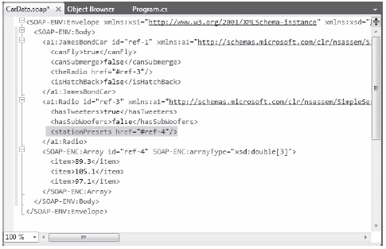

You can use the BinaryFormatter type to illustrate how easy it is to persist an instance of the JamesBondCar to a physical file. Again, the two key methods of the BinaryFormatter type to be aware of are Serialize() and Deserialize():
Assume you have created an instance of JamesBondCar, modified some state data, and want to persist your spy mobile into a *.dat file. Begin by creating the *.dat file itself. You can achieve this by creating an instance of the System.IO.FileStream type. At this point, you can create an instance of the BinaryFormatter and pass in the FileStream and object graph to persist. Consider the following Main() method:
// Be sure to import the System.Runtime.Serialization.Formatters.Binary // and System.IO namespaces. static void Main(string[] args) { Console.WriteLine("***** Fun with Object Serialization *****\n"); // Make a JamesBondCar and set state. JamesBondCar jbc = new JamesBondCar(); jbc.canFly = true; jbc.canSubmerge = false; jbc.theRadio.stationPresets = new double[]{89.3, 105.1, 97.1}; jbc.theRadio.hasTweeters = true; // Now save the car to a specific file in a binary format. SaveAsBinaryFormat(jbc, "CarData.dat"); Console.ReadLine(); }
You implement the SaveAsBinaryFormat() method like this:
static void SaveAsBinaryFormat(object objGraph, string fileName) { // Save object to a file named CarData.dat in binary. BinaryFormatter binFormat = new BinaryFormatter(); using(Stream fStream = new FileStream(fileName, FileMode.Create, FileAccess.Write, FileShare.None)) { binFormat.Serialize(fStream, objGraph); } Console.WriteLine("=> Saved car in binary format!"); }
The BinaryFormatter.Serialize() method is the member responsible for composing the object graph and moving the byte sequence to some Stream-derived type. In this case, the stream happens to be a physical file. You could also serialize your object types to any Stream-derived type, such as a memory location or network stream.
Once you run your program, you can view the contents of the CarData.dat file that represents this instance of the JamesBondCar by navigating to the \bin\Debug folder of the current project. Figure 20-5 shows this file opened within Visual Studio 2010.
Figure 20-5 JamesBondCar serialized using a BinaryFormatter
Now suppose you want to read the persisted JamesBondCar from the binary file back into an object variable. Once you open CarData.dat programmatically (with the File.OpenRead() method), you can call the Deserialize() method of the BinaryFormatter. Be aware that Deserialize() returns a general System.Object type, so you need to impose an explicit cast, as shown here:
static void LoadFromBinaryFile(string fileName) { BinaryFormatter binFormat = new BinaryFormatter(); // Read the JamesBondCar from the binary file. using(Stream fStream = File.OpenRead(fileName)) { JamesBondCar carFromDisk = (JamesBondCar)binFormat.Deserialize(fStream); Console.WriteLine("Can this car fly? : {0}", carFromDisk.canFly); } }
Notice that when you call Deserialize(), you pass the Stream-derived type that represents the location of the persisted object graph. Once you cast the object back into the correct type, you will find the state data has been retained from the point at which you saved the object.